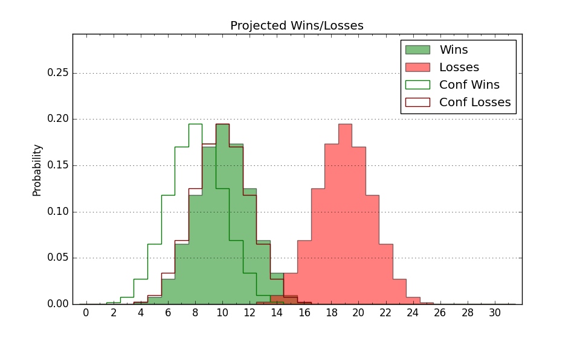

| Home | Game Probabilities | Conferences | Preseason Predictions | Odds Charts | NCAA Tournament |
| City: | Cheney, Washington | |
| Conference: | Big Sky (7th)
| |
| Record: | 1-2 (Conf) 3-11 (Overall) | |
| Ratings: | Comp.: -6.7 (236th) Net: -6.4 (236th) Off: 103.7 (199th) Def: 110.1 (267th) SoR: 0.0 (168th) |
| Remaining | ||||||
|---|---|---|---|---|---|---|
| Date | Opponent | Win Prob | Pred. | |||
| 1/11 | @ Sacramento St. (330) | 58.5% | W 69-67 | |||
| 1/18 | @ Idaho (242) | 36.0% | L 74-78 | |||
| 1/20 | @ Montana St. (178) | 25.4% | L 70-77 | |||
| 1/23 | Northern Arizona (253) | 68.1% | W 78-73 | |||
| 1/25 | Northern Colorado (143) | 44.9% | L 79-81 | |||
| 1/30 | @ Idaho St. (179) | 25.5% | L 68-75 | |||
| 2/1 | @ Weber St. (228) | 34.2% | L 71-75 | |||
| 2/6 | Sacramento St. (330) | 82.7% | W 73-63 | |||
| 2/8 | Portland St. (244) | 66.3% | W 77-72 | |||
| 2/15 | Idaho (242) | 65.7% | W 78-74 | |||
| 2/20 | @ Northern Colorado (143) | 19.3% | L 75-85 | |||
| 2/22 | @ Northern Arizona (253) | 38.5% | L 74-77 | |||
| 2/27 | Weber St. (228) | 63.9% | W 75-71 | |||
| 3/1 | Idaho St. (179) | 53.8% | W 72-71 | |||
| 3/3 | @ Montana (158) | 21.8% | L 73-82 | |||
| Previous | Game Score | |||||
| Date | Opponent | Win Prob | Result | Off | Def | Net |
| 11/4 | @Colorado (84) | 10.2% | L 56-76 | -18.0 | 9.3 | -8.8 |
| 11/6 | Seattle (142) | 44.8% | W 93-86 | 23.6 | -5.7 | 17.9 |
| 11/11 | @Missouri (38) | 3.6% | L 77-84 | 17.4 | 1.0 | 18.4 |
| 11/17 | Cal Poly (222) | 62.7% | L 78-82 | -15.1 | 4.6 | -10.5 |
| 11/21 | (N) Washington St. (81) | 15.8% | L 81-96 | 1.7 | -3.3 | -1.7 |
| 11/23 | @California Baptist (163) | 22.4% | L 68-79 | 2.2 | -1.2 | 1.0 |
| 11/26 | @UC Santa Barbara (114) | 15.3% | L 51-67 | -18.6 | 10.4 | -8.2 |
| 11/30 | @Utah (77) | 8.4% | L 80-88 | 19.3 | -4.9 | 14.4 |
| 12/4 | North Dakota (274) | 72.5% | W 87-81 | 18.1 | -17.7 | 0.4 |
| 12/7 | @South Dakota St. (108) | 14.3% | L 53-74 | -17.6 | 7.6 | -10.0 |
| 12/10 | @Washington (89) | 10.7% | L 69-87 | 3.7 | -10.3 | -6.5 |
| 1/2 | Montana (158) | 48.8% | L 81-92 | 3.1 | -21.5 | -18.4 |
| 1/4 | Montana St. (178) | 53.6% | W 68-63 | -4.8 | 15.5 | 10.7 |
| 1/9 | @Portland St. (244) | 36.6% | L 59-64 | -20.5 | 16.7 | -3.7 |
| Stats & Trends | |||||
|---|---|---|---|---|---|
| Current | Day | Week | Month | Season | |
| Composite | -6.7 | +0.0 | +0.2 | -1.8 | +1.4 |
| Comp Rank | 236 | -1 | -1 | -27 | +8 |
| Net Efficiency | -6.4 | +0.0 | +0.1 | -2.5 | -- |
| Net Rank | 236 | -2 | -4 | -34 | -- |
| Off Efficiency | 103.7 | +0.0 | -2.3 | -2.4 | -- |
| Off Rank | 199 | +1 | -39 | -48 | -- |
| Def Efficiency | 110.1 | +0.0 | +2.4 | -0.1 | -- |
| Def Rank | 267 | -- | +30 | +2 | -- |
| SoS Rank | 50 | +2 | -22 | -31 | -- |
| Exp. Wins | 10.1 | -0.0 | +0.1 | -0.9 | -2.1 |
| Exp. Conf Wins | 8.1 | -0.0 | +0.1 | -0.9 | -0.8 |
| Conf Champ Prob | 1.5 | -0.1 | -0.8 | -5.6 | -6.9 |

| Advanced Stats | ||
|---|---|---|
| Stat | Value | Rank |
| Off Eff FG % | 0.512 | 156 |
| Off Ast Ratio | 0.157 | 109 |
| Off ORB% | 0.279 | 209 |
| Off TO Rate | 0.169 | 307 |
| Off FT Ratio | 0.322 | 201 |
| Def Eff FG % | 0.546 | 308 |
| Def Ast Ratio | 0.157 | 270 |
| Def ORB% | 0.312 | 268 |
| Def TO Rate | 0.168 | 79 |
| Def FT Ratio | 0.384 | 291 |